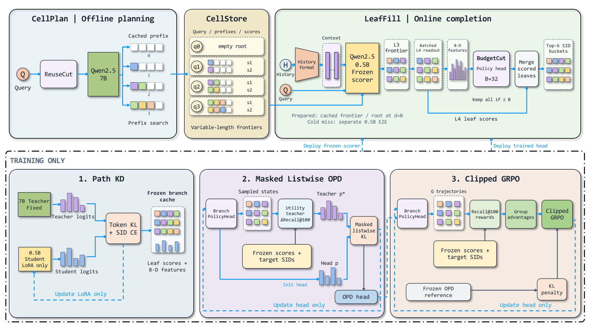

Contents · 9 sections
1What problem is it solving?2The pipeline: prefixes offline, suffixes online3How many levels to cache per query?4How does the small model complete prefixes?5Why pick branches at all?6Does it actually work better?7Limitations as I see them8How a search team could try it9VerdictSHARE
Teams putting generative retrieval into production should read this: it shows how to reuse large-model compute per query while leaving personalization to a small online model, and it is backed by an online A/B test. Bigger generative retrieval models recall better, but decoding token by token online is too slow. Yet the same query is searched by many people every day, so generating a full Semantic ID from scratch for each request repeats work. ReuseGR splits the job in two. Offline, a large model generates a set of SID prefixes per query, shared by all requests with that query. Online, a small model picks prefixes using the current user's history and completes the remaining tokens. On a search-advertising dataset, assuming prefixes are already cached, it matches the HR@100 of running the large model fully online, with 57.7% lower online latency. In an online A/B test, CTR rose 0.93% relative to the small-model baseline.
What problem is it solving?
The setting is retrieval for search ads: a user types a query, and the system must pull candidates from 3.38 million ad items for the ranking stages. Each item has a 4-level SID, each level choosing one of 32 codes, and the first two levels roughly mark a coarse category. Generative retrieval has a model read the query and the user's recent behavior and generate the SID level by level.
The catch is that one query is searched by many people. An illustrative example:
| Request (illustrative) | Query | Recent behavior | Generated SID |
|---|---|---|---|
| User A | wireless earbuds | viewed fitness bands | 12-07-19-03 |
| User B | wireless earbuds | viewed noise-cancelling headphones | 12-07-25-11 |
| User C | wireless earbuds | no history | 12-07-02-30 |
The first two levels are nearly the same because the query mostly decides them; the last two are where users differ. A fully online system decodes from level one for every request, so the first two levels are recomputed for nothing.
The paper checks this in click logs with an analysis called KeyProbe. It compares two guesses of a click record's code at a given level. The first looks only at other click records with the same query and the same earlier codes, and takes the code they use most often at this level. The second ignores the query and takes the most common code after the same prefix across all queries. At SID levels 1 and 2, the query-based guess is 61.18 and 25.95 percentage points more accurate; at level 3 the gap is only 3.51 points, and at level 4 there is no reliable difference. Early levels are decided by the query, later levels by personal history, and that is the basis for the split.


The pipeline: prefixes offline, suffixes online
| Stage | Where | Input | Output |
|---|---|---|---|
| ReuseCut | offline | query text | how many prefix levels to cache for this query (0 to 3) |
| 7B planner | offline | query only | up to 32 prefixes per query with their scores |
| 0.5B completer | online | query and the current user's history | completes cached prefixes and scores each full SID |
| BudgetCut | online | scored candidate branches | keeps at most 32 branches, merges them and takes the top 100 SIDs |
The large model sees only the query, runs once, and everyone searching that query shares the result; the small model sees personal history and runs per request. Queries with no cache entry fall back to the original 0.5B end-to-end model. Those with a predicted depth above 0 are queued for offline planning; those with predicted depth 0 stay fully online. A request never waits for the large model.
How many levels to cache per query?
Caching deeper leaves fewer levels to decode online, but also less room for personal history to choose. Good depths differ a lot across queries, so ReuseCut sets one per query.
Labels come from click history and measure a kind of coverage. For each click record of a query, leave that record out, rank the query's remaining clicks to get the top 32 prefixes at each level, and check whether this record's clicked SID prefix is among them. The share of records found is that level's coverage. Illustration: a query has 20 click records; at level 1, 19 of them find their prefix in the top 32 ranked from the others, 15 at level 2 and only 6 at level 3, giving coverage of 0.95, 0.75 and 0.30. With a threshold of 0.4, the label is depth 2. The paper actually uses a confidence lower bound of coverage, which makes queries with few clicks more conservative; queries with fewer than 5 records are left out of the depth classifier's training. A light classifier then predicts depth from the query's character fragments and length, so unseen queries get a depth too.
Why not cache 2 levels for everyone? With per-query depths, 78.62% of users' clicked SIDs stay reachable, versus 74.18% at a fixed depth of 2. A shuffle test is more telling: giving the same depths to other queries keeps the depth distribution and online steps unchanged, yet HR@100 drops 3.17 points. The gain comes from matching depth to query, not from a different average depth.
How does the small model complete prefixes?
For each query the cache stores three things: the cache depth, the prefixes themselves (the first few codes of the SID), and the large model's score for each prefix. It stores codes and scores, not model internal states.
Online, the 0.5B completer first encodes the query and user history once, and all branches share that KV cache. Starting from the cached prefixes, it then decodes on its own down to level 3, always expanding the branch with the highest total score first. What the cache saves is the search over the first levels: there is no online pass picking prefixes from all codes level by level. The small model still conditions on the prefix when generating further, so the prefix codes are given to it as input. This yields up to 64 three-level branches (a branch is the first three codes of an SID). For queries cached at depth 3, the cached prefixes serve as branches directly. Finally the small model scores all level-4 leaves under every branch in one batch. A full SID's score adds the large model's offline prefix score to the small model's online score for the remaining levels.
Because the small model is weaker, the 7B model distills into it: along the path of the SID the user actually clicked, the student's token distribution at the levels after the prefix is pulled toward the teacher's, with half the weight kept on the ordinary supervised loss. The teacher sees only the query; the student sees query and history. Only the student's LoRA weights train; the teacher and the cache stay fixed. At unchanged latency, HR@100 rises from 82.64% to 83.32%.
Does personalization matter? On 286,046 requests whose history differs from that of the query's first record, with cache and weights fixed, real histories beat histories shuffled within the same query by 1.43 HR@100 points. On 5.67% of requests, the clicked SID was missing from the large model's query-only top 100, and ReuseGR recovered it from personal history. Caching prefixes rather than full result lists is what leaves room for this.
Why pick branches at all?
Each of 64 branches holds up to 32 leaves. Merging everything lets a high-scoring branch bring in leaves nobody clicks and push relevant SIDs out of the top 100. An illustrative example: branch B scores high, but most of its leaves are never clicked; after merging they take many top-100 slots and push out clicked SIDs from branch C. So branch choice should look at how much recall rises after merging and re-ranking, not at a branch's own score.
BudgetCut learns this. Its candidates are the up to 64 three-level branches from the previous step, whose leaves are already scored, and it chooses at most 32 of them. A branch's value depends on what is already chosen, so it picks one at a time. At each step a two-layer MLP scores the remaining branches. It takes four inputs: the branch's 8 features, the average features of the branches already chosen, how many have been chosen, and how many remain. All 8 features come straight from the scoring results. Four describe the branch itself: the raw score of this level-3 code, its log-probability normalized over valid codes only, and the cumulative scores of the parent prefix and of the branch. The other four describe its leaves: how many valid leaves it has, the best leaf score, the mean score of the top 8 leaves, and how many of the top 8 are valid.
Training has two stages, and both use click labels only on the training set. The first defines a branch's recall gain: add it to the chosen set, merge all leaves, re-rank by score, take the top 100, and see how much the share of the user's clicked SIDs recovered rises. A branch that pushes out relevant SIDs gets a negative gain. At each step, the gains of the remaining branches are used directly as scores in a softmax, giving selection probabilities: the larger the gain, the higher the probability, and branches with negative gain get the lowest. The policy's scores are pulled toward these probabilities. The second stage uses GRPO to optimize the top-100 recall of the whole chosen set directly. The scorer is frozen during training and leaf scores can be stored in advance, so trying combinations needs no new SID generation. At online inference there are no click labels; the trained MLP alone picks branches one by one.
Against picking by score, BudgetCut adds 2.91 HR@100 points for 0.42 ms; against merging everything, it adds 2.50 points and saves 4.64 ms. Merging fewer branches gives higher recall, because what gets pushed out is often the relevant SIDs.
Does it actually work better?
Offline tests use 44,225 queries on one A100 with batch size 1, assuming prefixes are cached.
| Method | HR@100 (%) | Recall@100 (%) | Mean latency (ms) |
|---|---|---|---|
| 0.5B end-to-end | 81.99 | 45.53 | 117.00 |
| 7B end-to-end | 85.71 | 50.96 | 168.88 |
| SmartGR (7B distilled into 0.5B) | 83.56 | 46.90 | 114.20 |
| OneRec-Think (2-level prefix cache) | 81.48 | 44.92 | 74.20 |
| ReuseGR | 85.82 | 46.05 | 71.45 |
HR@100 matches 7B end-to-end while latency falls from 168.88 ms to 71.45 ms. Against OneRec-Think, which also caches prefixes, latency is similar and HR@100 is 4.34 points higher. The full system wins on HR@100 and latency; how much each component contributes comes from the separate controlled experiments.
A 14-day A/B test in search ads on a large global e-commerce platform gave each arm 10% of traffic, with ReuseGR replacing the 0.5B end-to-end retriever and everything else unchanged. CTR rose 0.93% and revenue per thousand requests rose 1.05%.
Limitations as I see them
First, HR@100 catches up with 7B but Recall@100 does not: 46.05% versus 50.96%, and slightly below SmartGR's 46.90%. With 15.77 clicked SIDs per query on average, Recall is closer to real retrieval quality.
Second, gains depend on cache hits. Caching only the 9,276 previously seen queries and sending the rest to the old model gives an overall HR@100 of 82.38%, barely above the 81.99% of 0.5B end-to-end. Where new queries are common, asynchronous cache filling has to catch up.
Third, online conversion per click fell 0.21%. Orders per request rose 0.78%, but clicks rose more, so each click brought slightly fewer orders.
How a search team could try it
- Run a KeyProbe-style analysis on your own logs: per SID level, how much does the query decide the code? The split only makes sense if early levels are query-dominated.
- Start cheap: cache 2 prefix levels for every query, complete online with a small model, and compare latency and recall with your end-to-end retriever.
- If that pays off, add per-query depths, and use the shuffled-depth control to confirm the gain comes from matching.
- Add distillation and branch selection last. BudgetCut trains against a frozen scorer, so it can be iterated offline cheaply.
Verdict
The main takeaway: in generative retrieval, the part decided by the query can be computed once offline and shared, so online compute is spent only on what differs between users.
| Dimension | Assessment |
|---|---|
| Problem importance | High. Latency is the main barrier to serving large generative retrievers |
| Novelty | Medium-high. Prefix caching exists; per-query depth and recall-aware branch selection are new |
| Evidence | Strong. Shuffled-depth and swapped-history controls plus a 14-day online A/B test |
| Engineering cost | Medium. Needs offline planning, a cache service and a fallback path for misses |
| Worth trying | Yes. Teams with repetitive queries and SID-based retrieval can start with the fixed-depth version |
How did this read for you?
Hoot made a note. Thanks for the feedback.
One tap, no sign-in; tap again to undo. Only anonymous counts are kept, never who you are.
Related papersMore from Paper Daily
 Generative · 2026-11-11TS-GEAR: Taobao Shangou GEnerative Ad RetrievalIn food delivery search, a merchant that cannot reach the user's current location is not merely ranked low, it must not appear at all. Common SIDs are built only from content and collaborative signals and at best treat location as a soft signal, so unreachable merchants are filtered after generation, waste beam slots, and stay outside end-to-end training. TS-GEAR from Taobao Shangou writes locati…
Generative · 2026-11-11TS-GEAR: Taobao Shangou GEnerative Ad RetrievalIn food delivery search, a merchant that cannot reach the user's current location is not merely ranked low, it must not appear at all. Common SIDs are built only from content and collaborative signals and at best treat location as a soft signal, so unreachable merchants are filtered after generation, waste beam slots, and stay outside end-to-end training. TS-GEAR from Taobao Shangou writes locati… Generative · 2026-10-29PailitaoMMSearch2.0 Technical Report: Scaling Generative Retrieval to Unified End-to-End Multimodal SearchIn Taobao's Pailitao, a user may photograph a shirt and ask for shorts to match it, which calls for a complementary item rather than a duplicate. The usual pipeline classifies intent first and routes to separate retrieval channels, so one wrong step breaks everything after it. Alibaba's report lets a 2B vision-language model read the raw image and instruction and generate product Semantic IDs dir…
Generative · 2026-10-29PailitaoMMSearch2.0 Technical Report: Scaling Generative Retrieval to Unified End-to-End Multimodal SearchIn Taobao's Pailitao, a user may photograph a shirt and ask for shorts to match it, which calls for a complementary item rather than a duplicate. The usual pipeline classifies intent first and routes to separate retrieval channels, so one wrong step breaks everything after it. Alibaba's report lets a 2B vision-language model read the raw image and instruction and generate product Semantic IDs dir… Generative · 2026-07-23TSGR: Taobao Search Generative RetrievalDeep dive: TSGR: Taobao Search Generative Retrieval.
Generative · 2026-07-23TSGR: Taobao Search Generative RetrievalDeep dive: TSGR: Taobao Search Generative Retrieval. Generative · 2026-11-11Not All Branches Are Equal: Adaptive Semantic ID Construction for Generative RecommendationGenerative recommendation numbers products with SIDs, and the dominant approach is residual quantization: each level has one global code table and looks up whatever the previous level left unexplained, which amounts to assuming that each token carries its own independent meaning. The authors checked RQ-VAE IDs on Amazon Beauty. Two products sharing only the first token have a mean cosine similari…
Generative · 2026-11-11Not All Branches Are Equal: Adaptive Semantic ID Construction for Generative RecommendationGenerative recommendation numbers products with SIDs, and the dominant approach is residual quantization: each level has one global code table and looks up whatever the previous level left unexplained, which amounts to assuming that each token carries its own independent meaning. The authors checked RQ-VAE IDs on Amazon Beauty. Two products sharing only the first token have a mean cosine similari… Generative · 2026-11-04Think Globally, Generate Personally: Multi-View Thinking with Adaptive Generation for Generative RecommendationIn SID generative recommendation, a user's newly emerging interest is often buried under a pile of old behavior, and every user shares one output transformation. This paper patches both weak spots in TIGER-style models. Before generation, the model gets two extra thinking tokens: one reads only the user's full history, the other reads only the last few items. The two resulting vectors sit at the…
Generative · 2026-11-04Think Globally, Generate Personally: Multi-View Thinking with Adaptive Generation for Generative RecommendationIn SID generative recommendation, a user's newly emerging interest is often buried under a pile of old behavior, and every user shares one output transformation. This paper patches both weak spots in TIGER-style models. Before generation, the model gets two extra thinking tokens: one reads only the user's full history, the other reads only the last few items. The two resulting vectors sit at the… Generative · 2026-11-02RoFiGR: Coarse Routing, Fine Refinement via Level-Adaptive Distillation in Multimodal Generative RecommendationA generative recommender produces an item's SID one code at a time, and once the first two codes pick the wrong branch, no amount of later precision can recover the relevant items. In multimodal recommendation the SIDs are mostly built from image and text semantics, so their first codes may not reflect which items the same users tend to buy. RoFiGR therefore concentrates collaborative signal on t…
Generative · 2026-11-02RoFiGR: Coarse Routing, Fine Refinement via Level-Adaptive Distillation in Multimodal Generative RecommendationA generative recommender produces an item's SID one code at a time, and once the first two codes pick the wrong branch, no amount of later precision can recover the relevant items. In multimodal recommendation the SIDs are mostly built from image and text semantics, so their first codes may not reflect which items the same users tend to buy. RoFiGR therefore concentrates collaborative signal on t… Generative · 2026-11-02PFA: Attention Can Be Progressively Focused in Long-Sequence Generative RecommendationThe authors at Alibaba found that when a generative recommender decodes with beam search, attention concentrates on a few past behaviors as decoding proceeds, and which behaviors matter stays largely the same from step to step. Building on this, PFA picks the important history once for the whole decode, instead of having every beam pick it again at every step. It attends to the full history as us…
Generative · 2026-11-02PFA: Attention Can Be Progressively Focused in Long-Sequence Generative RecommendationThe authors at Alibaba found that when a generative recommender decodes with beam search, attention concentrates on a few past behaviors as decoding proceeds, and which behaviors matter stays largely the same from step to step. Building on this, PFA picks the important history once for the whole decode, instead of having every beam pick it again at every step. It attends to the full history as us… Generative · 2026-11-02UGR: Unified Generative Ranking for Heterogeneous E-commerce RecommendationTaobao's generative ranking framework UGR has one generative model directly produce the screen the user finally sees. The roughly one thousand organic, ad and other-business candidates of a request go to the model together, and it generates the final list item by item, instead of each business ranking its own items and a blending stage stitching them together. That stitching step is the old probl…
Generative · 2026-11-02UGR: Unified Generative Ranking for Heterogeneous E-commerce RecommendationTaobao's generative ranking framework UGR has one generative model directly produce the screen the user finally sees. The roughly one thousand organic, ad and other-business candidates of a request go to the model together, and it generates the final list item by item, instead of each business ranking its own items and a blending stage stitching them together. That stitching step is the old probl…
Discussion
Add experiment details, reproduction notes or a different take. Requires a GitHub sign-in.
Loading the discussion…